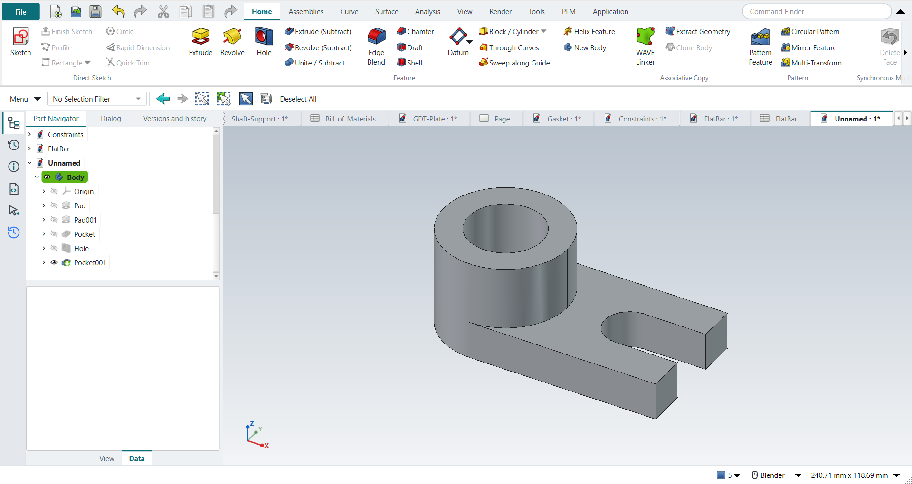

Tutorial L: The Locator
| Book |
Shih, Parametric Modeling with Siemens NX, ch. 3 (a millimetre part) |
| You learn |
Unite and subtract with Extrude, Project Curve, Hole, Until Next |
| Sizes |
A 75 × 50 × 15 mm block; an R25 boss 40 mm high; a Ø30 bore; a Ø20 hole; a 20 mm slot. The text gives every size; the hole’s and the slot’s positions are in figures: the hole 25 mm from the right edge on the slot’s centre line, the slot 15 mm from the front edge. |

In short
-
Ctrl+N, X, XY_Plane; R, 75 × 50, Ctrl+Q, 15 mm.
-
The bottom face, Extrude; Project Curve on an edge; a circle through its midpoint and corner; the projected edge to reference; 40 mm.
-
The cylinder’s top face, Extrude (Subtract): Ø30 through all.
-
Hole: Ø20 through all.
-
The right face, Extrude (Subtract): the 20 mm slot, To first (Until Next).
Step by step
| # | In the book (NX) | In FreeCAD NX-Style | Result | Notes |
|---|---|---|---|---|
L1 |
File > New, Millimeters, Blank template, name Locator |
Ctrl+N |
differs |
NXStyle’s New is NX’s Model template (a part with a Body to sketch on); there is no Blank template, so the part is in Modeling already; the name is given at the first save |
L2 |
File > Applications > Modeling |
ribbon 'Application › Design > Modeling' |
same |
application modeling; the new part stays the active one: True (Unnamed1 : 1[*]) |
L3 |
Extrude, Sketch Section, the default XY plane, OK |
X key, plane row + MB2 |
same |
picked XY-plane (Base plane) |
L4 |
Rectangle ®: two corners, MB2 |
R key + 2 MB1 clicks + MB2 |
same |
tool True; 4 curves; ended True |
L5 |
Dimensions 75 and 50 ('scale the sketch?': Yes) |
values applied |
differs |
DoF 0; FreeCAD has no prompt to scale the whole sketch to the first dimension; the corner is put on the origin here (the book leaves the rectangle where it was drawn) |
L6 |
Finish Sketch, distance 15, OK |
Ctrl+Q, 'lengthEdit' = 15 mm, MB2 = OK |
same |
volume 56250.0 mm^3, expected 56250.0; 1 solid(s) |
L7 |
Extrude, the bottom face as the sketch plane |
select Face5 + ribbon 'Home › Feature > Extrude' |
same |
|
L8 |
More > Project Curve: the bottom left edge, OK |
ribbon 'Project Curve' + MB1 on each edge + MB2 |
same |
1 of 1 edges picked in the graphics window |
L9 |
Circle: centre on the edge’s midpoint, through the left corner, MB2 |
O key + 2 MB1 clicks + MB2; midpoint and corner as constraints |
same |
DoF 0; the book: no dimension needed, the circle is defined by the midpoint and the corner. NX snaps while drawing, FreeCAD records the same as constraints |
L10 |
(FreeCAD) the projected edge to reference |
ribbon 'Convert To/From Reference' |
differs |
profile edges 2 → 1. FreeCAD 1.1 projects a picked edge as defining geometry, which would leave an open wire; NX makes regions |
L11 |
End 40, Boolean Unite, Flip (upward), OK |
'lengthEdit' = 40 mm, 'checkBoxReversed' on, MB2 = OK |
same |
volume 120063.6 mm^3, expected 120063.6; 1 solid(s); height 0.0 .. 40.0 mm. Features in a Body unite by themselves (no Boolean option) |
L12 |
Extrude, the top face of the cylinder |
select Face6 + ribbon 'Home › Feature > Extrude (Subtract)' |
differs |
the subtracting extrude is its own button |
L13 |
Circle on the sketch origin, MB2; diameter 30 |
O key + 2 MB1 clicks + MB2; diameter applied |
differs |
centre tied to the cylinder’s edge (Edge10): the sketch origin is not at the centre; DoF 0 |
L14 |
Boolean Subtract, Through All, Flip (downward), OK |
'Through all', MB2 = OK |
same |
volume 91789.3 mm^3, expected 91789.3; 1 solid(s); FreeCAD’s subtracting extrude goes into the part without a flip |
L15 |
Hole (a placed feature): Simple, a point on the base’s top face |
select Face5 + ribbon 'Home › Feature > Hole' |
differs |
FreeCAD’s Hole drills at circle centres in a sketch on the face: not placed without a sketch |
L16 |
Location dimensions 25 and 30 |
O key + 2 MB1 clicks + MB2; centre placed by values |
differs |
centre at (50, 25): 25 from the right edge, on the slot’s centre line. NX adds the two location dimensions by itself |
L17 |
Diameter 20, Depth Limit = Through Body, OK |
'Diameter' = 20 mm, 'Through all', MB2 = OK |
same |
volume 87076.9 mm^3, expected 87076.9; 1 solid(s) |
L18 |
Extrude, the right vertical face of the base |
select Face3 + ribbon 'Home › Feature > Extrude (Subtract)' |
differs |
|
L19 |
More > Project Curve: the top and bottom edges, OK |
ribbon 'Project Curve' + MB1 on each edge + MB2 |
same |
2 of 2 edges picked in the graphics window |
L20 |
Rectangle aligned to the top and bottom edges; dimensions 15 and 20 |
R key + 2 MB1 clicks + MB2; on the projected edges; values applied |
same |
15 from the front edge, 20 wide, full height; DoF 12 |
L21 |
(FreeCAD) the projected edges to reference |
ribbon 'Convert To/From Reference' |
differs |
profile edges 6 → 4 |
L22 |
Subtract, End = Until Next (into the hole), OK |
'To first' (FreeCAD’s Until Next), MB2 = OK |
limit |
removed 300.0 mm^3 of the 5143.8 the slot holds: FreeCAD 1.1.4’s 'To first' stops 1 mm into the part instead of at the hole’s wall (measured headless too, the same with 'Up to face' on the hole’s face); NX stops at the next face. Workaround next |
L23 |
Workaround: the slot’s depth = 25 (to the hole’s axis) |
slot selected + ribbon 'Home › Edit Feature > Edit Parameters', 'Dimension', 'lengthEdit' = 25 mm, MB2 = OK |
same |
volume 81933.1 mm^3, expected 81933.1; 1 solid(s); the same part as NX’s Until Next here, because the slot is as wide as the hole and on its centre line |
L24 |
The finished Locator is shown in the graphics window |
render of the graphics window |
same |
22.5% of the view shows the part |
| Result | Means |
|---|---|
same |
The book’s NX steps work as written. |
differs |
It works, but the FreeCAD way is different; the notes say how. |
limit |
The book’s way fails in FreeCAD itself; a workaround follows in the next steps. |
missing |
FreeCAD has no such function; a stand-in follows. |
skipped |
Not replayed; the notes give the reason. |
FAILED |
Did not work. |
What differs from NX
-
NX-Style’s New is already the Model template; there is no Blank template to switch from.
-
A projected edge is defining geometry: turn it into reference geometry before extruding.
-
Hole drills at circle centres in a sketch; NX adds the location dimensions itself.
-
To first into the hole stops 1 mm into the part in FreeCAD 1.1.4 (L22); the workaround is a 25 mm depth, to the hole’s axis (L23).